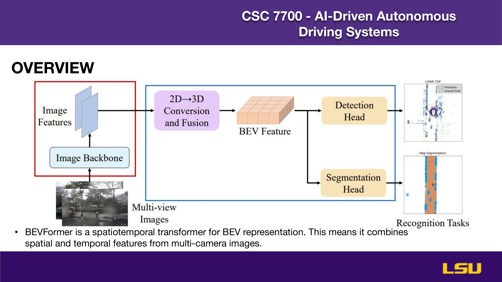

BEVFormer: Learning Bird’s-Eye-View Representation from Multi-Camera Images via Spatiotemporal Transformers
Authors: Zhiqi Li, Wenhai Wang, Hongyang Li, Enze Xie, Chonghao Sima, Tong Lu, Yu Qiao, Jifeng Dai
Presentation by: Obiora Odugu
Time of Presentation: 20 March 2025
Blog post by: Ruslan Akbarzade
Link to Paper: https://arxiv.org/abs/2203.17270
Summary of the Paper
BEVFormer is a spatiotemporal transformer model designed to generate Bird’s-Eye-View (BEV) representations from multi-camera images for autonomous driving. It aims to overcome the limitations of LiDAR-based systems (high cost) and camera-only methods (poor depth estimation). BEVFormer uses spatial cross-attention to extract features from multi-camera views and temporal self-attention to align and integrate historical BEV frames. These components help track object motion and build a unified BEV feature map for 3D detection and map segmentation. The model uses grid-shaped BEV queries tied to real-world coordinates to guide feature extraction. Evaluated on datasets like nuScenes and Waymo, BEVFormer outperforms previous camera-based methods like DETR3D, achieving a 56.9% NDS score. It approaches the performance of some LiDAR-based models, showing its effectiveness in camera-only setups. The architecture enables better object tracking, motion estimation, and recall for low-visibility objects. However, challenges remain in accurately inferring 3D geometry from 2D images. Overall, BEVFormer pushes camera-based 3D perception closer to practical deployment in autonomous vehicles.
Introduction
The slide "INTRODUCTION" highlights the importance of 3D perception in applications like autonomous driving. It presents the challenges of existing methods: LiDAR-based approaches offer high accuracy but are costly, while camera-based methods are more affordable yet face difficulties with depth estimation. The objective of the study is to enhance camera-based 3D perception by utilizing bird’s-eye-view (BEV) representations through a system called BEVFormer. The image on the right visually illustrates 3D bounding box annotations used for traffic perception.
'
Why Bird's-Eye-View (BEV)?

This slide explains the motivation for using Bird’s-Eye-View (BEV) in autonomous driving. It emphasizes that LiDAR-based methods generate high-definition (HD) maps which are crucial for localization and scene understanding. BEV offers a unified spatial and temporal representation, making it ideal for downstream tasks like 3D object detection and map segmentation. The images illustrate scenarios where the absence of LiDAR or HD maps leads to limitations in navigation and planning—captured by the phrases “No Lidar, No HD map” and “No Map, No plan.”
Contributions
This slide outlines the key contributions of the BEVFormer approach. It introduces a unified BEV representation that transforms multi-camera and temporal data into a bird’s-eye-view map, facilitating both 3D object detection and map segmentation. The method ensures efficient feature extraction using Spatial Cross-Attention to aggregate information from various camera angles, and Temporal Self-Attention to incorporate past BEV frames for motion tracking. The model achieves state-of-the-art performance with a 56.9% NDS score on the nuScenes benchmark, outperforming DETR3D by 9.0%, setting a new baseline for future 3D perception research. The images illustrate how BEVFormer interprets and maps the driving environment.
Historical Evolution
This slide presents the evolution of Bird’s-Eye-View (BEV) approaches in 3D perception from before 2021 to 2022. Early methods focused on generating HD maps in BEV coordinates and combining features from cameras and LiDAR. In 2021, models like DETR3D and BEVDet introduced fused object detection using omnidirectional cameras. By early 2022, methods such as BEVFormer and PersFormer began explicitly constructing BEV representations using camera parameters. Later in 2022, research progressed to multimodal feature fusion with models like BEVFusion and FUTR3D. The core question addressed is how to transform front-view camera data into BEV to enhance feature quality. The bottom visuals show different strategies: outputting BEV maps, implicit and explicit BEV feature processing, and fusion across BEV-feature dimensions using inputs from both cameras and LiDAR.
CAM2BEV

This slide demonstrates the CAM2BEV approach, which transforms camera images into a semantically segmented bird’s-eye view. The top row shows input images from four different camera perspectives: front, rear, left, and right. The bottom row compares the resulting BEV segmentation outputs from various methods: the Ground Truth reference, a Homography-based approach, DeepLab Xception, and uNetXST. The visual comparisons highlight the challenges and effectiveness of different models in accurately converting perspective images into structured BEV maps suitable for semantic scene understanding.
Overview

This slide provides an overview of the BEVFormer architecture. It illustrates how multi-view camera images are processed through an image backbone to extract features, which are then converted and fused from 2D to 3D to form BEV features. These features are passed to two heads: a detection head for object detection and a segmentation head for map segmentation. The diagram highlights BEVFormer’s role as a spatiotemporal transformer, effectively combining spatial and temporal features from multiple cameras to perform recognition tasks in the bird’s-eye-view domain.
BACKBONES
This slide shows the progression of backbone architectures used in computer vision, categorized into CNN-based (green) and transformer-based (pink) models. It tracks developments from 2020 to 2023, starting with RegNet, followed by transformer-based models like ViT, DeiT, PVT, and Swin in 2021. CoAtNet appears as a hybrid model, while 2022 sees a return to CNNs with ConvNeXt and FocalNet. InternImage emerges in 2023. These models were originally trained on general 2D tasks and need adaptation for 3D perception in vehicle scenes, highlighting the challenge of transferring knowledge from traditional image tasks to complex 3D environments.
ATTENTION IS ALL YOU NEED (1)

This slide introduces the self-attention mechanism from the Transformer architecture, popularized by the paper “Attention Is All You Need.” On the left, the architecture diagram shows how input embeddings are processed through multiple layers of multi-head self-attention and feed-forward networks, with residual connections and normalization. On the right, a visual example illustrates how self-attention enables each word in a sentence to attend to all others, capturing contextual relationships. However, the slide also notes a drawback: the vanilla attention mechanism is computationally intensive and challenging to scale efficiently.
VISION TRANSFORMER
This slide explains how the Vision Transformer (ViT) applies transformer models to image recognition tasks. It illustrates the process of splitting an image into 16×16 patches, converting these patches into a sequential format, and then flattening them into 1D vectors. These flattened patch embeddings are treated similarly to word tokens in NLP and are input into a standard transformer architecture, with positional encoding to retain spatial information. The title emphasizes the core idea: just as words form sequences for language models, image patches can be processed as sequences for visual understanding at scale.
ATTENTION IS ALL YOU NEED (2)

This slide elaborates on various types of attention mechanisms beyond standard self-attention, including cross attention, temporal self and cross attention, spatial attention, flash attention, and deformable attention. The diagram on the right illustrates the core self-attention process, where queries, keys, and values are computed from hidden states and then used to generate attention-weighted outputs. Below, it highlights the computational challenge of attention: its time and memory complexity scales quadratically with the number of tokens.
ATTENTION IS ALL YOU NEED (3)

This slide expands on the different types of attention mechanisms used in transformer models. It includes self attention, cross attention, temporal self and cross attention, spatial attention, flash attention (optimized for large-scale models like GPT), and deformable attention. The top-right diagram illustrates cross attention, where the decoder queries attend to encoded inputs using key and value projections. The bottom image visualizes deformable attention, which selectively focuses on a sparse set of relevant spatial locations rather than all positions, making it more computationally efficient—especially useful for high-resolution tasks like 3D perception.
BEVFORMER ARCHITECTURE

This slide explains the BEVFormer architecture, which processes multi-camera images along with historical BEV features. The input features pass through a backbone network, and grid-shaped BEV queries are used to extract information. The architecture uses spatial cross-attention to gather spatial features from camera images and temporal self-attention to integrate past BEV features for continuity and motion understanding. The output is a unified BEV feature map that supports downstream perception tasks like detection and segmentation. The diagrams illustrate how these attention mechanisms interact with input features to refine BEV representations over time.
BEVFORMER ARCHITECTURE (2)

This slide details Contribution 1 of the BEVFormer architecture: Cross Attention. Each BEV query corresponds to a specific grid cell in the BEV plane, which is a 2D grid mapped to real-world 3D coordinates. These grid coordinates are transformed into real-world meter values. Using the camera projection matrix, the system projects 3D reference points into each camera's view. Deformable attention is then applied to extract spatial features from the most relevant camera perspectives. The accompanying formulas and diagram illustrate the transformation process and attention computation across multiple camera views.
BEFORMER ARCHITECTURE(3)

The slide "BEVFormer Architecture – Contribution 2: Temporal Attention" presents how temporal information is handled in the BEVFormer model, which is designed for bird’s eye view perception in autonomous driving.
It highlights two key components:
Motion Alignment:
Since the ego vehicle (the one equipped with cameras) is constantly moving, the BEV feature map from the previous time step needs to be adjusted to align with the current viewpoint. This alignment is done by shifting the past feature map based on the vehicle’s ego-motion, resulting in a version of the previous map that corresponds to the current spatial position of the vehicle.
Temporal Self-Attention Mechanism:
After aligning the past features, there’s still the issue that objects in the environment might have moved independently of the vehicle. To handle this, the model uses a deformable attention mechanism. This approach allows the system to dynamically identify and match relevant features across different time steps, even if they’ve shifted due to object motion.
The equation on the slide represents this temporal self-attention process. It shows how the current BEV query interacts with both current and aligned past features to extract the most relevant information using deformable attention.
EXPERIMENT SETUP

This slide describes the experiment setup used to evaluate BEVFormer on 3D object detection and map segmentation tasks. Two datasets are used: nuScenes, which provides large-scale multi-view camera data and 3D annotations, and the Waymo Open Dataset, which offers 360° labels but with fewer camera views. The evaluation metrics include:
Mean Average Precision (mAP)
NuScenes Detection Score (NDS), which combines detection accuracy and various error penalties
Intersection over Union (IoU) for segmentation quality
ATE, ASE, AOE, AVE, AAE to assess errors in translation, scale, orientation, velocity, and attributes, respectively.
The image shows a sample annotated scene and the NDS formula used in scoring.
Experiment Setup (2)

The slide "Experiment Setup" describes the configuration used to train and evaluate the BEVFormer model. Two backbone networks were employed for feature extraction: ResNet101 with Deformable Convolutions, initialized from FCOS3D, and VoVNet-99, initialized from DD3D. For the Bird’s Eye View (BEV) query settings, different configurations were used for the nuScenes and Waymo datasets. In the nuScenes dataset, the BEV grid size is 200×200, with a perception range from -51.2 meters to 51.2 meters and a resolution of 0.512 meters per cell. In the Waymo dataset, the grid size is 300×220, covering a perception range of -35 to 75 meters along the X-axis and -75 to 75 meters along the Y-axis, with a resolution of 0.5 meters per cell. During training, four reference points are used along the Z-axis, ranging from -5 to 3 meters. The model is trained over 24 epochs with a learning rate of 2 × 10⁻⁴. The accompanying images show that the model is tested under a variety of challenging conditions, including different lighting scenarios such as daylight and night time, as well as the presence of dynamic objects like pedestrians and cyclists. This setup demonstrates the model’s ability to generalize across complex and realistic urban environments.
RESULTS

The slide "Results" presents the performance comparison of the BEVFormer model against other state-of-the-art 3D object detection models on the nuScenes dataset.
BEVFormer shows a significant improvement over DETR3D. On the validation set, BEVFormer outperforms DETR3D by 9.2 NDS (Normalized Detection Score) points, achieving 51.7% compared to DETR3D’s 42.5%. On the test set, the improvement is similarly strong, with BEVFormer reaching 56.9% NDS versus DETR3D’s 47.9%, a gain of 9.0 points.
These results demonstrate that BEVFormer performs competitively even when compared to LiDAR-based models. Specifically, BEVFormer achieves a comparable NDS score to SSN (56.9%) and comes close to PointPainting (58.1%), both of which rely on LiDAR sensors, while BEVFormer uses only camera input.
The accompanying tables provide detailed performance metrics including mAP, mATE, mASE, mAOE, mAVE, and mAAE for various models. The results show that BEVFormer not only surpasses other camera-based methods like FCOS3D, PGD, and DETR3D but also narrows the performance gap with LiDAR-based approaches, highlighting its effectiveness in 3D detection using only vision data.
RESULTS (2)

This slide continues the "Results" section by presenting the 3D detection performance of BEVFormer on the Waymo validation set and nuScenes metrics.
The table compares multiple models, including camera-based and LiDAR-based approaches, using both the Waymo evaluation metric and the nuScenes evaluation metric. For Waymo, performance is measured using the Average Precision with Heading (APH) at two IoU thresholds (0.5 and 0.7), and at two difficulty levels (L1 and L2). For nuScenes, key metrics include NDS (Normalized Detection Score), Average Precision (AP), and several error measures such as ATE (Translation Error), ASE (Scale Error), and AOE (Orientation Error).
From the Waymo results:
PointPillars, a LiDAR-based model, performs best overall, especially under stricter conditions (IoU=0.7).
Among camera-based models, BEVFormer outperforms DETR3D and CaDDN across all Waymo metrics, indicating better detection performance even under more challenging conditions.
On nuScenes metrics:
BEVFormer again outperforms DETR3D, achieving a higher NDS (0.526 vs. 0.494), better AP, and improved scores across ATE, ASE, and AOE.
Overall, the results demonstrate BEVFormer's strong performance across datasets and evaluation standards, particularly as a camera-only model that is competitive even against some LiDAR-based baselines.
RESULTS (3)

This slide presents additional results focused on 3D detection and map segmentation performance on the nuScenes validation set. It evaluates various models not just for object detection, but also for their ability to segment maps in bird's eye view (BEV), highlighting the strength of BEVFormer in multi-task learning.
The table compares different models and variants — including VPN, Lift-Splat, and BEVFormer — on both tasks: 3D object detection and BEV segmentation. The segmentation performance is measured using Intersection over Union (IoU) for cars, vehicles, road, and lane.
Key observations:
BEVFormer, especially the full version trained jointly on both detection and segmentation tasks, achieves the highest NDS (0.520) and mAP (0.412) in 3D detection.
It also shows state-of-the-art segmentation performance, with top scores in multiple categories:
Cars: 46.8
Vehicles: 46.7
Road: 77.5
Lane: 23.9
An even stronger configuration of BEVFormer reaches 25.7 IoU for lane segmentation, outperforming all other methods.
The results demonstrate that BEVFormer not only excels in detection but is also highly effective for map segmentation, making it a powerful unified model for comprehensive scene understanding in autonomous driving applications.
ABLATION STUDY

The slide titled "Ablation Study – Effectiveness of Spatial Cross-Attention" examines how different attention mechanisms in BEV encoders affect the model’s 3D detection performance on the nuScenes validation set. This analysis compares BEVFormer-S variants using different spatial attention strategies, and benchmarks them against other BEV encoders like VPN and Lift-Splat.
Three BEVFormer-S variants are tested:
Global attention, which uses full spatial cross-attention across the entire BEV grid.
Degraded global attention, where attention is weakened by limiting the deformable interaction targets to reference points.
Local attention, which restricts attention to local regions, reducing computational cost.
The results clearly show that local attention in BEVFormer-S achieves the best overall detection performance, with an NDS of 0.448 and mAP of 0.375, while also being the most memory-efficient (~20GB GPU usage). It also maintains relatively strong scores in translation (mATE), orientation (mAOE), and overall parameter/FLOPs efficiency.
In comparison:
Global attention has slightly lower accuracy (NDS 0.404), higher GPU memory consumption (~36GB), and higher computation cost.
The degraded global attention version offers a middle ground, balancing performance and resource usage.
VPN and Lift-Splat perform notably worse in all detection metrics, confirming the effectiveness of BEVFormer’s spatial cross-attention, especially when optimized with local focus. This study highlights that a locally constrained attention mechanism not only saves memory and computation but also improves detection accuracy, making it the most effective choice among the evaluated strategies.
ABLATION STUDY (2)

This slide from the Ablation Study focuses on evaluating the Effectiveness of Temporal Self-Attention in BEVFormer.
The six subplots compare the performance of three models — DETR3D, BEVFormer-S (without temporal modeling), and BEVFormer (with full temporal self-attention) — across different traffic density conditions, segmented into intervals (0–40%, 40–60%, 60–80%, and 80–100%).
Key insights from the plots:
(a) NDS (Normalized Detection Score) and (b) mATE (Average Translation Error) clearly show that BEVFormer consistently outperforms both DETR3D and BEVFormer-S, especially in denser traffic scenarios. This suggests that temporal self-attention helps maintain high detection accuracy when the scene becomes more complex.
(c) mASE (Average Scale Error) improves slightly across all models as density increases, but BEVFormer achieves the lowest errors, indicating better object size estimation.
(d) mAOE (Average Orientation Error) decreases with BEVFormer, reflecting its improved orientation prediction, particularly when more temporal data is leveraged.
(e) mAAE (Average Attribute Error) shows that BEVFormer achieves better attribute prediction in high-density scenes, while BEVFormer-S and DETR3D perform worse, with visible fluctuations.
(f) mAVE (Average Velocity Error) also improves with BEVFormer, confirming that temporal modeling helps track object motion more accurately.
Overall, these results demonstrate that temporal self-attention significantly boosts the model’s robustness and accuracy, especially in crowded or dynamic environments, by leveraging motion cues across time.
ABLATION STUDY(3)

This slide from the Ablation Study focuses on evaluating model scale and latency for different BEVFormer configurations on the nuScenes validation set.
The table compares multiple model variants (A through D) against the full BEVFormer, analyzing trade-offs between latency, frame rate (FPS), and performance metrics (NDS and mAP). The latency is measured on a V100 GPU using an input resolution of 900×1600, and the backbone used is ResNet101 with Deformable Convolutions (R101-DCN).
Key observations:
The full BEVFormer model uses multi-scale features and a 200×200 BEV resolution with 6 layers, resulting in the highest detection performance (NDS: 0.517, mAP: 0.416) but also the highest latency (BEVFormer latency: 130 ms) and lowest FPS (1.7).
Model A, which disables multi-scale input but keeps the 200×200 resolution, reduces latency significantly while maintaining similar accuracy (NDS: 0.511). This makes it a more efficient alternative with slightly better speed (1.9 FPS).
Model B, with both multi-scale and a smaller 100×100 BEV grid, achieves a good balance with a smaller BEVFormer latency (53 ms) and improved FPS (2.0), while keeping high performance (NDS: 0.504).
Model C, which removes multi-scale but retains the 200×200 grid, runs even faster (2.1 FPS) but sees a small drop in mAP.
Model D is the fastest (2.3 FPS) and most lightweight variant with minimal latency (7 ms in BEVFormer), but its detection performance drops more noticeably (NDS: 0.478, mAP: 0.374).
In summary, the slide shows how reducing BEV resolution and disabling multi-scale features can significantly improve inference speed and lower latency, but this comes at the cost of reduced detection accuracy. The full BEVFormer offers the best overall performance but requires the most computational resources.
VISUALIZATION

The "Visualization" slide presents qualitative results of BEVFormer on the nuScenes validation set, showing how well the model predicts 3D bounding boxes in both camera views and bird’s eye view (BEV).
The left three columns display multi-camera images from different angles — left, front, and right — where orange boxes represent BEVFormer’s predictions and blue boxes indicate the ground truth. The alignment between predicted and actual object positions demonstrates BEVFormer's strong spatial accuracy across different perspectives.
On the right side, a BEV map compares predictions and ground truth using the LiDAR top view. Again, predictions (in colored boxes) closely match the ground truth (in black boxes), suggesting the model’s high precision in localizing objects in 3D space from a top-down view.
Overall, this visualization confirms BEVFormer’s ability to make accurate and consistent 3D detections across multiple views, reinforcing the quantitative results shown in previous slides.
Conclusion

This concluding slide summarizes the achievements and limitations of the BEVFormer architecture. It emphasizes that BEVFormer effectively aggregates spatial and temporal information, significantly improving camera-based 3D perception. Despite notable performance gains, the slide acknowledges that camera-only methods still face challenges compared to LiDAR-based systems, particularly in accuracy and efficiency in inferring 3D locations from 2D images. Future research directions are suggested to address these challenges and enhance camera-only autonomous driving capabilities further.
OBIORA'S THOUGHTS

- Significant improvement in bridging the gap between image-based models and LiDAR-based perception, but challenges remain.
- Spatiotemporal modeling enhances perception, leading to better object tracking and motion estimation.
- Improved velocity estimation and higher recall for low-visibility objects enhance autonomous driving safety.
- Significant impact on camera-only systems, making LiDAR-free Autonomous Vehicles (AVs) more viable and economically feasible, bringing EVs closer to practical reality, particularly in the US and Europe.
DISCUSSION

This part includes a discussion about 3D detection and segmentation tasks performed jointly, highlighting the challenge known as negative transfer learning. Participants were asked to consider their perspective as engineers at a startup focused on camera-only autonomous vehicles (AVs), evaluating joint learning versus individual learning approaches.
Audience Insights and Comments:
Ruslan and George mentioned:
- While joint learning can save computational resources, individual learning models might excel at specific tasks independently, potentially yielding higher accuracy.
- He emphasized that the optimal choice between joint or individual learning depends greatly on the specific application scenario, like autonomous driving, collaborative drone operations, or simpler tasks where individual models could be more efficient.
Alex and Bassel commented:
- Joint learning might be preferable as it facilitates continuous improvement through integrated updates, making it suitable for autonomous driving applications.
- However, they noted that using the complete BEVFormer architecture for simple lane segmentation tasks might be considered excessive unless temporal context is crucial. They agreed that BEVFormer could be beneficial, but the decision depends significantly on the dataset and task complexity.
- They also remarked that Tesla effectively uses similar architectures in real-world scenarios, underscoring practical viability.
Additional Clarifications (relevant points):
- Patch dimensions in transformer models are flexible, typically 16x16 or 4x4 pixels, as clarified by the presenter.
- Ground truth in multi-camera learning contexts was clarified as the Bird’s Eye View (BEV).
- The method for mapping 2D objects into 3D space was clarified as using projections without predefined heights.
The discussion concluded acknowledging the practical impact of BEVFormer on autonomous driving perception, with a particular emphasis on its strengths, potential areas for optimization, and considerations for practical applications in real-world systems.


{kind=link}
{kind=link}
{kind=link}